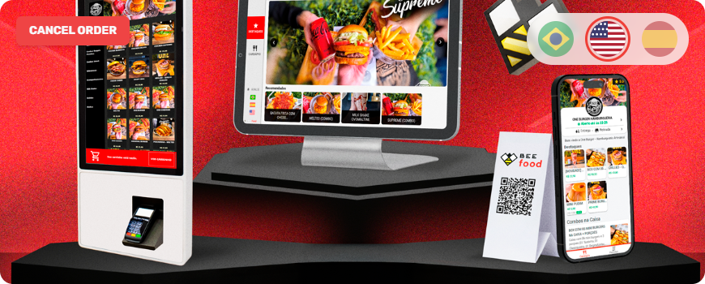
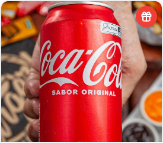
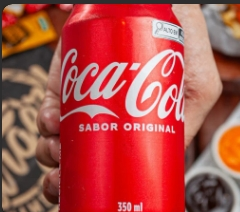
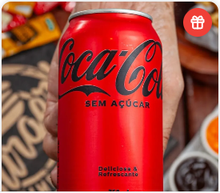

<!-- Capa, versão SÓ COM O TOTEM. Alternativa à `slides/01-capa.html`, que traz o
     totem e o tablet juntos.

     Qual usar é escolha de quem publica, e a troca é real:

     - **só totem** — o aparelho vai centralizado e grande, e a tela fica
       legível: dá para ler DRINKS, Cola US e The drink cola no feed.
     - **totem + tablet** — a capa já diz "nos dois aparelhos" sem gastar linha
       de texto, e o preço é cada tela ficar menor.

     Mora numa pasta separada de propósito: o `renderizar.py` transforma em PNG
     todo `.html` de `slides/`, e duas capas na mesma pasta virariam um carrossel
     de oito imagens com dois slides "1 de 7".

     Renderizar:
       python .cursor/skills/carrossel-novidades/scripts/renderizar.py \
           carrosseis/traducao-cardapio-presencial/capa-alternativa

     As imagens sobem dois níveis (`../../imagens-puras/`) porque são as mesmas
     do carrossel — recorte de print não se duplica.

     O totem cabe inteiro até o painel do pinpad; a coluna sai pela base, que é
     o certo: a borda de baixo do slide lê como piso. -->
<div class="slide slide--capa">
  <div class="topo">
    <span class="logo"></span>
    <span class="contador">1 de 7</span>
  </div>

  <div class="pilha g24" style="margin-top: 28px">
    <span class="pilula pilula--novidade">Novidade</span>
    <h1 class="titulo">Seu cardápio já fala <span class="destaque">inglês</span>?</h1>
    <p class="subtitulo">Agora fala — e espanhol também.</p>
  </div>

  <span class="selo-ilustracao" style="left: 88px; top: 706px">Ilustração</span>

  <div class="sangria" style="top: 522px; left: 335px; width: 410px">
    <div class="totem" style="width: 410px; --coluna: 300px">
      <div class="totem__tela">
        <div class="tela-totem" style="font-size: 18px">
          <div class="tela-totem__setores">
            <div class="tela-totem__marca-caixa"><span></span></div>
            <div class="tela-totem__setor tela-totem__setor--ativo">DRINKS</div>
            <div class="tela-totem__setor">MOLHOS ADICIONAIS</div>
            <div class="tela-totem__setor">COMBOS (BURGER + PORÇÃO + BEBIDA)</div>
            <div class="tela-totem__setor">BURGERS AVULSOS (SÓ O LANCHE)</div>
            <div class="tela-totem__setor">SIDES</div>
            <div class="tela-totem__setor">MILK SHAKES</div>
          </div>
          <div class="tela-totem__corpo">
            <div class="tela-totem__banner">
              
            </div>
            <div class="tela-totem__rolagem">
              <div class="tela-totem__secao">Drinks</div>
              <div class="tela-totem__grade">
                <div class="tela-totem__card">
                  
                  <div>
                    <span>Cola US</span><small>The drink cola</small><b>R$ 5,00</b>
                  </div>
                </div>
                <div class="tela-totem__card">
                  
                  <div>
                    <span>Coca Cola 350ml</span><small>Coca Cola Lata</small>
                    <b>R$ 8,90</b>
                  </div>
                </div>
                <div class="tela-totem__card">
                  
                  <div>
                    <span>Coca Zero 350ml</span><small>Coca Zero Lata</small>
                    <b>R$ 8,90</b>
                  </div>
                </div>
              </div>
            </div>
            <div class="tela-totem__sacola"><i></i><span>0</span></div>
          </div>
        </div>
      </div>
      <div class="totem__painel">
        <div class="totem__leitor"></div>
        <div class="totem__impressora"></div>
        <div class="totem__pinpad">
          <div class="totem__tecla"><span></span><span></span><span></span></div>
          <div class="totem__tecla"><span></span><span></span><span></span></div>
          <div class="totem__tecla"><span></span><span></span><span></span></div>
        </div>
      </div>
      <div class="totem__coluna"></div>
      <div class="totem__base"></div>
    </div>
  </div>
</div>
